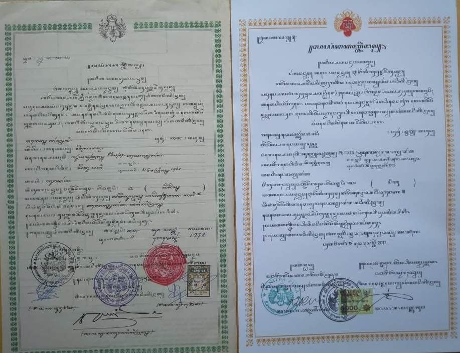

1. Formulir
2. Pas Foto Pimpinan
3. Fotokopi KTP Pimpinan
4. Cover Proposal
5. Fotokopi Pendirian atau Perubahan Badan Usaha
6. Surat Keterangan Tanah
7. Rekomendasi Kesesuaian Tata Ruang/Keterangan Aset Instansi
8. Rekomendasi Pemanfaatan Tanah
9. Surat Kuasa dan KTP Kuasa (Jika Diwakilkan)